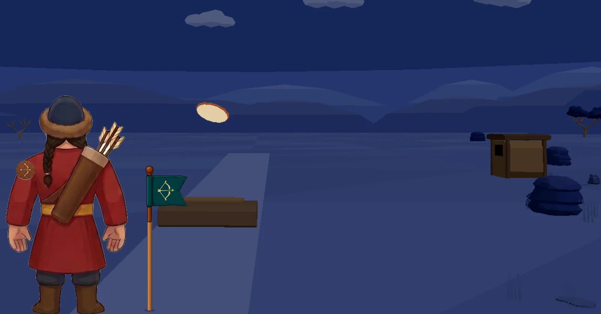

Hedefe
Puta atışı
Hedefe atış. Okçu belirli bir hedefi vurmaya çalışır.
Kemankeşlerden Ok Meydanı'na kısa bir bakış
Türk okçuluğu yüzyıllar boyunca hem savaşın hem sporun hem de ustalık geleneğinin parçası oldu. Bu sayfada geleneğin kısa bir özeti, İstanbul'daki Okmeydanı ve Bil At!'ın Ok Meydanı modu var.

Türk okçuluğu, atlı okçuluktan Osmanlı'daki kemankeşliğe uzanan uzun bir gelenektir. Geleneksel yay bileşik yaydır: ahşap, hayvan boynuzu ve kirişten yapılır, katmanlar hayvansal tutkalla birleştirilir.
Geleneksel Türk okçuluğu 2019'da UNESCO'nun Somut Olmayan Kültürel Miras Temsili Listesi'ne girdi. Liste; okçuluk disiplinlerini, atış tekniklerini ve geleneksel ekipmanın ustalığını kapsıyor.

Fatih Sultan Mehmed, İstanbul'un fethinden sonra Okmeydanı'nı okçulara ayırdı. Semt adını buradan alır.
Rekor bir mesafeye ok düştüğünde, düştüğü yere menzil taşı dikilirdi. Taşın üzerindeki kitabede okçunun atışı anlatılırdı. Kaynaklar, kayıtlı 132 ok âbidesinden 55'inin bugün ayakta olduğunu yazar.
Okmeydanı'ndaki Okçular Tekkesi, II. Bayezid döneminde yaptırıldı ve 1639'da yenilendi. Tekke bugün yok, ancak minaresi ayakta.
Okçuluk sezonu Hıdırellez'de açılır, Kasım'da kapanırdı.
Kemankeş, Osmanlı'da okçuluk yapan kişidir. Okçular arasına kaydedilmek için hedef atışında beceri göstermek ve belirli bir mesafeye ok atmak gerekirdi.
Hedefe atış. Okçu belirli bir hedefi vurmaya çalışır.
En uzağa atış. Kaynaklar bunu en itibarlı disiplin olarak anlatır. Atışlar belirli rüzgârlarda yapılır, en uzağa atanın adı menzil taşına yazılırdı.
Okların kalın bronz ya da demir plakaları deldiği bir güç gösterisi.

Bil At!'ın 3D okçuluk modu bu geleneğe selam durur. Oyunda da hedefe atış var.
Oyun ücretsiz, Ok Meydanı internetsiz oynanır. Oyunun bilgi yarışması tarafı için Türkçe bilgi yarışması ve okçuluk oyunu sayfasına bak.
Kemankeş, Osmanlı'da okçuluk yapan kişiye verilen addır. Kemankeşlik de Osmanlı'daki okçuluk geleneğinin adıdır.
İstanbul'da, okçuluk için ayrılmış tarihî meydan ve bugün aynı adı taşıyan semttir. Fatih Sultan Mehmed, İstanbul'un fethinden sonra burayı okçulara ayırdı.
Puta atışı hedefe atıştır. Menzil atışı en uzağa atıştır.
Evet. Geleneksel Türk okçuluğu 2019'da UNESCO'nun Somut Olmayan Kültürel Miras Temsili Listesi'ne girdi.
Bil At!'ın Ok Meydanı modu 3D bir okçuluk oyunudur ve bu geleneğe selam durur. Tarihî bir canlandırma değil, hızlı ve eğlenceli bir oyundur. Ücretsizdir, internetsiz oynanır.
Ücretsiz, hesap gerekmez. Google Play ve App Store'da.